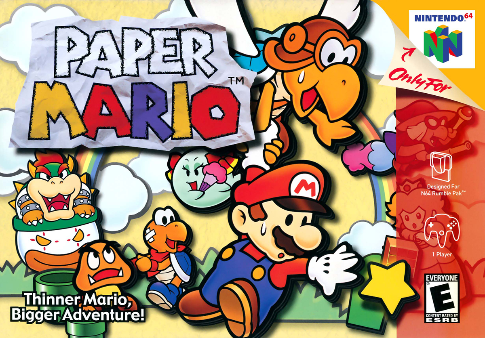

Paper Mario (Under Construction)
One of the greatest video game series of all time.

Did you know Paper Mario was originally supposed to be called Super Mario RPG 2?
Brief history of the Paper Mario series
- N64 - Paper Mario was first released on the N64 in the US on February 5th, 2001
- Gamecube - A sequel, Paper Mario: The Thousand-Year Door, was released on the gamecube in the US on October 11th, 2004
- Villain - The sequel is the first game that did not feature Bowser as the main anatogonist in the storyline
- Villain - The sequel is the first game that did not feature Bowser as the main anatogonist in the storyline
- Wii - The third game in the series, Super Paper Mario, was released in the US on April 9th 2007
- New gameplayThe Wii installment was the first game to offer side-scrolling style of gameplay instead of the usual turn-based mechanics
- 3DS - Paper Mario: Sticker Star was the first game to make it to a handheld device, the 3Ds. It was released in the US on November 11th, 2012
- Wii U - Paper Mario: Color Splash arrived on the Wii U in the US on October 7th, 2016
- Switch - The latest installmanent, Paper Mario: The Origami King, arrived on the Switch on July 17th, 2020.
- Bonus - I received the Switch game for Christmas 2021 and am currently playing it!
"Paper Mario was, much like Super Mario RPG was to the SNES, the swansong of the N64. It was followed by a sequel, Paper Mario: The Thousand-Year Door, in 2004. It's still a frequent debate which of the two is better, though I would have to go with the sequel. Still, the original Paper Mario is also brilliant! Since the Wii can play GameCube games, you can just buy Paper Mario on VC and hunt down a copy of the sequel if you don't already own it. Any self-respecting Nintendo fan should play at least one of them."
-- Marcel van Duyn, Nintendo Life
For a deeper dive on Paper Mario 64, check out the Super Mario Wiki article